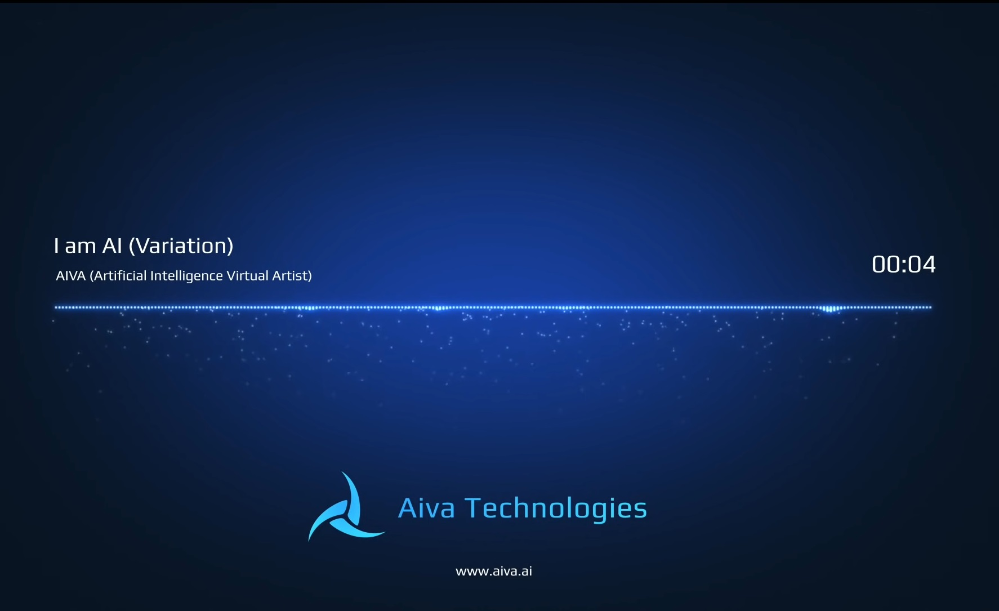

Pour la vidéo c’est la même chose, l'outil est surnommé Imagen Video, fonctionne de la même manière que Dall-E 2 ou Midjourney. Avec une simple suggestion textuelle, l'intelligence artificielle est capable de produire une courte vidéo traduisant du mieux possible la situation décrite. Même aujourd’hui cette IA est beaucoup moins développée que les IA créatrices d’images.
Il existe ausssi des IA qui créent des sons ou même des musiques. Magenta, par exemple, est une IA qui permet de composer de la musique mais cette application n’est pas pensée pour créer une musique entière mais seulement des presets (ou loops) que vous pourrez réutiliser facilement dans vos propres compositions.
Effectivement, si vous voulez créer un son entier par Intelligence Artificielle, il faudra vous diriger vers AIVA. Cette Intelligence Artificielle a appris à composer de la musique après s’être entraînée sur plus de 30 000 partitions de musique classiques et de variétés en tout genre !
Si vous n’êtes pas encore convaincu, regardez cette vidéo en cliquant sur cette image :
Retour à l'accueil